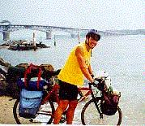

Bike Ride USA Journal
|  |
| Tire in James River Yorktown, Virginia |
Day 72 I did the Jamestown, and Williamsburg thing for the night went to a pub with live entertainment. All that was there was tourist and hanging with them is always a crapshoot. Some can be fun but most are dead beats that need entertainment to have fun.
Epiloge: Days 73 to 94. Just Goofing Around
Day 73 I did laundry and was going to spend another day of rest but by 2:00 I decided I wanted to hit the road. I went off to Smithville 20 miles away. I got permission from the cops to sleep in the local park and got my haircut at a local barber. I made my way to the bar to kill time before dark. Thus: Don and Magee, invited me to breakfast. Another couple gave me 20 bucks for dinner. Tom Jerry and Steve, Darnell Liz bought me drinks dinner and a night at the Smithville Marina Hotel Suite. $150/nite. I knew I left for a reason. The trip has a mind of its own.
Day 74 50 miles Smithville to Elizabeth City Met Steve and Janell Carter kids Allie. and Kyler. Steve a high power guy who married a small town girl and are doing well in a small town environment. I had dinner at their waterside home and spent the night out in their backyard. My next day was to Nags Head 50 miles away where Carters owned property. I stayed at the Carters rental home and slept on the floor. The college kids who have been staying there for the last few months were moving out that day. I had a place to myself. For tonight, I am a local.
Day 75 Nags Head to Buxton 50 miles. A beautiful ride along beach front homes and parks. The Buxton campground had tons of bugs until the high winds took them away. I had to double anchor my tent.
Day 76 Buxton to Ocracoke. Camped at Teeters and hung out that night with John and Tracy at the Jolly Roger. I was tired of being on the road and wanted a change of pace so I checked into a couple of places looking for a job for 10 days. Jolly Roger, Howards Pub, Creekside Cafe and the Pelican. The Pelican said to come back tomorrow. Lots of bug and sand fleas at campground. The night was the muggiest and worst of the trip. I slept with the bugs instead of in the tent.
Day 77 Had Breakfast with John and Tracy at the Pelican. Got a job waiting, hosting and expediting at the Pelican. Hung out that night with another couple and Ely.
Day 78 - 82 Worked at the Pelican. Sid owner Sherry Mgr Win Bar server Jen Bartender Rufas Waiter Noah Waitress Ginger Waitress Sid Jr. Owners son Fred Man at house Howard Kid House Dan Big Guy that visited Gram Cook
Day 83 to 86 Hurricane Bonnie The first part of the day waited tables. At 12 we closed up shop and started to get the restaurant in order. Sid was sent home to take a nap because he was drunk by 2:00 The staff prepared for the hurricane. By 5:00 we went to Sherrys' place to set up for the storm. The whole crew was drunk by then. We put boards on the window and that's it. Was it enough? I was anxious all day since I did not have the utmost trust in what preparations we had made. We had 4 cases of beer. 1 case of water and whatever food she had in the house. They drank a lot, we ate 2 times a day, They got high a lot and we played hours of Monopoly. Needless to say the 5 of us staying at the house survived along with the neighborhood. Hence my first hurricane.
Day 87 Aug 29 The 2 1/2 ferry to Ceddar Island then to bike to Sealevel. Sealevel was knocked out pretty hard by Bonnie and the power was still down. The campground employees had been working 2 days just clean up the place. They invited me to have dinner with them as they barbecued burgers and dogs.
Day 88 August 30 Sealevel to Emerald Isle. 50 miles Saw a couple of trees down and some shingles down but the area along route 58 did not look too bad. Hurricane Fran a few years ago wiped out most of the the stuff that could be wiped out so damage was not as bad as I thought *
Day 89. August 31 Sealevel to N. Myrtle Beach. 60+ miles and it rained all day. Ate that night at Dicks and great Seafood Restaurant where the wait staff served with attitude. Camped at KOA only because I had to. Stayed at Dicks until 9:00 when the rain stopped.
Day 90 Sept 1 45 miles N. Myrtle to S. Myrtle Boring day.
Day 91 Sept 2 S. Myrtle to Mt Pleasant at a KOA Stopped and saw the North Carolina Battle Ship, Snuck into the KOA. cooked my last camping meal and talked that night with some Australian Campers mostly about the cultural differences is the Us and Australia, and different types of camping and hotel prices. Army Ants got into my tent that night and into my food. I woke up twice to bitting ants and spent 20 minutes each time to kill the ants in my tent. I got up in the rain in the middle of the night to move my tent.
Day 92. Sept 3 I road the final 20 miles to Charleston in the rain only to find that I was riding in the mist of a new hurricane called Elmer. It was windy and rainy and although I felt I had control I did not trust the cars on the busy no-shoulder 4 lane road. I got off the road for a while but when they threatened to close the bridge I did not want to get caught on the wrong side of the bridge. I proceeded to go over the bridge asking the cops directing traffic if it was OK. They said "Good Luck". 1/4 over the bridge the cops stopped me and told me to get in the car. I 1/2 wanted to stay because I have just traveled over 4500 miles on my own and 1/2 wanted the ride. My legs and wrist were bruised as the wind kept slamming me against the bridge wall as I walked it across. I reluctantly got in the car since walking was not an option in their minds and they dropped me off in downtown Charleston. I had just travel over 4000 miles on my own and my last 2 miles had to be in a police car. I spent that night at the Howard Johnsons. When I got into my hotel room I opened my packs to find 100s of ants still inside and mad as hell. I had to take out all my gear to dry it while doing so got bite all over my hands. I squished those little mothers then ripped there legs off. Man that felt good.
Day 93 September. Charleston. Did the Charleston Thing. Ghost Tour, Market Street, Battery Street and again stayed that night at H.J.
Day 94 September 5, My last Day :=( Did the Fort Sumter Thing. The site of the first shot of the Civil War. I went to the Bike Store to have my bike sent home and did some last minute shopping. It was then in a taxi and off to the Airport (US Airways) $298 round trip. Charleston to Pittsburgh Pennsylvania to San Francisco. I am ready to go home and get back to real life. Not having work lined up and having mortgage payments is starting to grind on my nerves.
It has now been several weeks since I completed my trip and I have since talked or written to some of the bikers that I had met on the road. We compared stories of the many miles we covered, the sights, the weather and the emotional peaks and valleys. The best part we all agreed however, was the people we met along the way. True kindness is the best way to describle them. Many of us dreamed of this trip because of the challenge involved. Looking back, the cycling was only a side-bar, the kindness that we experienced on our journey is what we will remember.
| Back to Top |
|---|